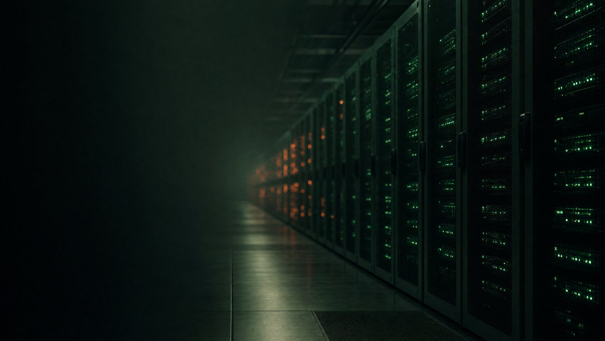
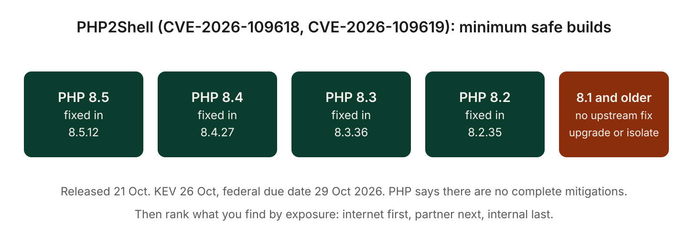

Two PHP Flaws Hit CISA KEV: Inventory Beats the CVSS Debate

On 26 October 2026, CISA added the two PHP vulnerabilities researchers call PHP2Shell to KEV and updated its alert, “Critical Vulnerabilities in PHP Require Immediate Patching”:
- CVE-2026-109618: PHP memory corruption vulnerability that allows unauthenticated remote code execution. Due date 29 October 2026.
- CVE-2026-109619: PHP stale internal request-state vulnerability that allows unauthenticated remote code execution. Due date 29 October 2026.

Unauthenticated RCE. Twice. Three calendar days for federal remediation from the alert, and that clock ran out on 29 October, ten days before this post. If you are still open, you are past the federal timeline.
PHP shipped fixes on 21 October: 8.5.12, 8.4.27, 8.3.36 and 8.2.35. Every earlier build on those branches is affected. PHP 8.1 and older get no fix from the project. PHP’s release notes say there are no complete mitigations and updating is the only safe choice (GHSA-w8hw-w9fx-j79w, GHSA-6wmf-4rv5-p3rp).
On scoring: PHP’s security team rates both 9.2 under CVSS 4.0, with high attack complexity. A 10.0 that circulated before release was never official. Do not let “high complexity” slow the ticket: CISA’s listing means someone is already clearing that bar.
Which deployments are exposed
This is where the “every PHP server is on fire” framing needs a caveat. Exposure depends on how PHP runs. Per PHP’s advisories, as summarized here:
- CVE-2026-109618 (out of memory corruption): demonstrated on Apache mod_php with default input and memory limits. PHP-FPM is exposed under narrower conditions. FrankenPHP and LSAPI are rated likely susceptible from source review, not validated.
- CVE-2026-109619 (stale request state): confirmed on both mod_php and FPM. Session upload progress, which is on by default, is one of the reachable paths. PHP 8.5 with
fatal_error_backtracesenabled is the strongest case. - Stopgaps while you patch, not fixes: set
session.upload_progress.enabled=0in php.ini, the FPM pool or server config, then restart workers (ini_set()and.user.iniare not enough), and setfatal_error_backtraces=0on 8.5. The advisories also discuss memory limit settings; read them before you touchmemory_limitin production.
So rank mod_php and FPM fleets serving the internet first. Do not drop CLI only hosts and container images from the inventory, because those images become web servers the moment someone reuses them.
The real failure mode is unknown PHP
Most mature orgs can patch “the WordPress cluster” or “the Laravel API” once someone names it. The failure is the PHP you forgot:
- Marketing microsites on cheap VPS hosts
- Vendor appliances that embed PHP
- Old shared hosting for a subsidiary brand
- CI images and container bases still shipping vulnerable runtimes
- Internal tools exposed through a reverse proxy that nobody labels as PHP
If your vulnerability management program keys only off named applications, dual PHP KEVs will punch through the gaps. You need runtime and package inventory that answers “where does php execute?”
Defender angle
Treat this as an asset discovery drill with teeth, not a single CVE ticket.
Step 1: Find interpreters
- Query package inventories for PHP packages across Linux fleets
- Scan container image registries for PHP base tags
- Identify web servers with PHP handlers (php-fpm, mod_php, CGI wrappers)
- Ask app owners for composer.lock and platform requirements, then verify on hosts
Step 2: Rank by exposure
- Internet reachable first
- Partner exposed next
- Purely internal last, still scheduled
Step 3: Patch or isolate
- Move to 8.5.12, 8.4.27, 8.3.36 or 8.2.35 or later, or to your distro’s backport (for example Debian DSA-6574-1 and Ubuntu USN-8948-1 cover both CVEs). Check the running version on the host, not the package manifest.
- PHP 8.1 and older: there is no upstream fix. Upgrade the app or isolate it.
- If a legacy app cannot move yet, put it behind stronger access control and WAF rules while you plan the real fix
- Do not confuse “WAF in place” with “patched”
Detection while you catch up
Unauthenticated RCE attempts against web stacks are noisy if you look.
- Spike in anomalous requests to PHP endpoints that return 500s or worker crashes
- php-fpm or Apache/Nginx workers spawning unexpected child processes
- Web shells or newly written PHP files under document roots after 21 October 2026, when the fixes and details went public
- Outbound connections from web pools to rare destinations shortly after request spikes
- Integrity monitoring alerts on
*.phpunder writable upload directories
Also hunt for post exploitation that looks boring: new cron entries under www-data, unexpected curl/wget from web users, and modified .user.ini or .htaccess files.
Mitigation specifics worth doing once
- Pin and rebuild images instead of hoping hosts drift into safety.
- Bake the stopgap settings into your base images (
session.upload_progress.enabled=0unless an app needs it) so the next rebuild does not quietly undo them. - Separate upload directories from executable PHP paths. Old advice. Still ignored. Still how webshells live.
- Centralize PHP version reporting in your CMDB or vulnerability dashboard so the next dual KEV does not start with a Slack scavenger hunt.
- Ask vendors who run PHP for you (managed CMS, hosted plugins, appliances) for their patched version in writing. You cannot patch their runtime, but you still own the risk.
Use CISA’s updated PHP alert and PHP’s own advisories together with the KEV entries, not instead of them.
What not to do
- Do not wait for a perfect enterprise advisory packet before inventory starts.
- Do not mark closed because “our main site is on Node now.” Forgotten PHP is still PHP.
- Do not publish or rehearse exploit details in ops channels. You need impact and defense, not a lab session during an emergency.
Leadership brief
Two PHP remote code execution flaws are on KEV as of 26 October 2026, both described by CISA as unauthenticated RCE, both due 29 October 2026 for federal agencies, a date that has passed. Fixed builds have been out since 21 October. Our bottleneck is inventory coverage, not debate about severity labels. We are enumerating PHP runtimes, patching internet exposed first, and hunting for webshell class follow on activity.
Checklist
- Produce a PHP runtime inventory across hosts and images
- Identify internet exposed PHP services
- Move every host and image to 8.5.12, 8.4.27, 8.3.36, 8.2.35 or a distro backport; isolate anything on 8.1 or older
- Set
session.upload_progress.enabled=0where apps do not need it - Hunt for new PHP files and web worker anomalies from 21 October onward
- Rebuild images and lock package versions
- Schedule the leftover long tail with named owners
When CISA drops two unauthenticated RCE KEVs on the same language runtime with a three day clock, the winners are the teams that already knew where that language runs. Everyone else is discovering production under fire.
Sources
- PHP security advisory GHSA-w8hw-w9fx-j79w (CVE-2026-109618)
- PHP security advisory GHSA-6wmf-4rv5-p3rp (CVE-2026-109619)
- CISA: CISA adds two known exploited vulnerabilities to catalog (26 Oct 2026)
- CISA bulletin: KEV additions and updated PHP alert
- CISA KEV entry: CVE-2026-109618
- CISA KEV entry: CVE-2026-109619
- BleepingComputer: CISA confirms PHP2Shell vulnerabilities now exploited in attacks
- Braindetox: PHP critical RCE fix, affected conditions and stopgaps
- ManageEngine: PHP2Shell patch listing (Debian DSA-6574-1, Ubuntu USN-8948-1)